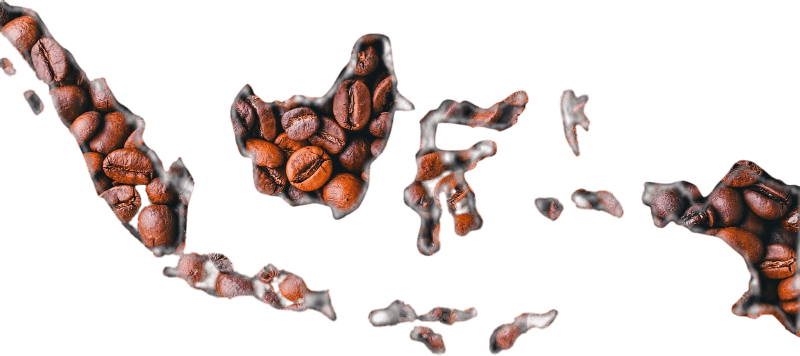

The Dutch governor in Malabar (India) sent arabica coffee (Coffea arabica) seedlings from Yemen to the Dutch governor of Batavia (now Jakarta) in 1696. The first seedlings failed due to flooding in Batavia. The second shipment of seedlings was sent in 1699 with Hendrik Zwaardecroon. The plants grew, and in 1711 the first exports were sent from Java to Europe by the Dutch East India Company—formally Verenigde Oostindische Compagnie and abbreviated VOC—reaching 2,000 pounds shipped in 1717. Coffee arriving in Amsterdam sold for high prices, 1 kg (2 lb) costing nearly one per cent of the average annual income. Indonesia was the first place, outside of Arabia and Ethiopia, where coffee was widely cultivated. The coffee was shipped to Europe from the port of Batavia (now Jakarta). There has been a port at the mouth of Ciliwung River since 397 AD, when King Purnawarman established the city he called Sunda Kelapa. Today, in the City area of Jakarta, one can find echoes of the seagoing legacy that built the city. Sail driven ships still load cargo in the old port. The Bahari museum occupies a former warehouse of the VOC, which was used to store spices and coffee. Menara Syahbandar (or Lookout Tower) was built in 1839 to replace the flag pole that stood at the head of wharves, where the VOC ships docked to load their cargos. In the 18th century, coffee shipped from Batavia sold for 3 Guilders per kilogram in Amsterdam. Since annual incomes in Holland in the 18th century were between 200 and 400 Guilders, this was equivalent to several hundred dollars per kilogram today. By the end of the 18th century, the price had dropped to 0.6 Guilders per kilogram and coffee drinking spread from the elite to the general population. The East Indies were the most important coffee supplier in the world during this period and it was only in the 1840s that their stranglehold on supply was eclipsed by Brazil. The coffee trade was very profitable for the VOC, and for the Dutch East Indies government that replaced it in 1800, but was less so for the Indonesian farmers who were forced to grow it by the colonial government from 1830 to around 1870 under the Cultuurstelsel (Cultivation system).
Welcome to Our Story
@ 2021 all coffee | All Rights Reserved